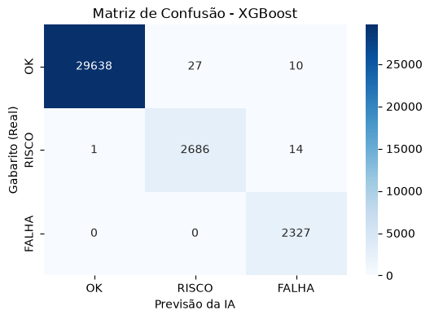

No monitoramento clássico de redes de computadores (como o Zabbix), costuma-se usar regras fixas: "Se o ping passar de 200ms, dispare um alarme". O problema é que, numa rede global, 200ms pode ser catastrófico para uma rota curta (Brasil-Brasil), mas absolutamente normal para uma rota intercontinental (Brasil-Europa). O objetivo deste artigo é ensinar como usamos Machine Learning para julgar falhas de rede usando métricas relativas (Desvio Absoluto Robusto), e qual algoritmo performa melhor nesse cenário.
A Árvore de Decisão faz perguntas em sequência (Ex: "O Z-Robusto é > 3?") até chegar a uma conclusão. É extremamente rápida e interpretável, mas sofre de "overfitting" (tende a decorar os dados de treino).
Ao invés de uma árvore, plantamos milhares delas. Cada árvore vê uma parte diferente dos dados (Amostragem Bootstrap). No final, elas votam para decidir se a rede está em falha. Isso reduz o viés da árvore simples.
Aqui as árvores não votam juntas, elas corrigem umas às outras. A árvore 2 foca exclusivamente nos pacotes que a árvore 1 errou. É o algoritmo campeão de competições no Kaggle.
Treinamos os três modelos utilizando o GridSearchCV para garantir uma disputa justa (ajuste de hiperparâmetros). Utilizamos um dataset com 69 fluxos da rede RIPE Atlas.

| Modelo | F1-Score (Macro) | Tempo de Treino | Interpretabilidade |
|---|---|---|---|
| Árvore de Decisão | Aguardando Execução | ... | Alta |
| Random Forest | Aguardando Execução | ... | Média |
| XGBoost | Aguardando Execução | ... | Baixa |
Usamos a biblioteca scikit-learn para o GridSearch. Exemplo de treino:
from xgboost import XGBClassifier
from sklearn.model_selection import GridSearchCV
params = {'n_estimators': [50, 100], 'learning_rate': [0.05, 0.1]}
grid = GridSearchCV(XGBClassifier(), params, cv=3)
grid.fit(X_treino, y_treino)
Recomendação: [Aqui o grupo justificará o vencedor com base no tempo vs acurácia].
Limitação: Redes de computadores sofrem de Data Drift. Um rompimento de fibra óptica amanhã pode mudar o padrão de latência da rede, tornando nosso modelo obsoleto. Na vida real, seria necessário re-treinar o modelo periodicamente usando dados novos.